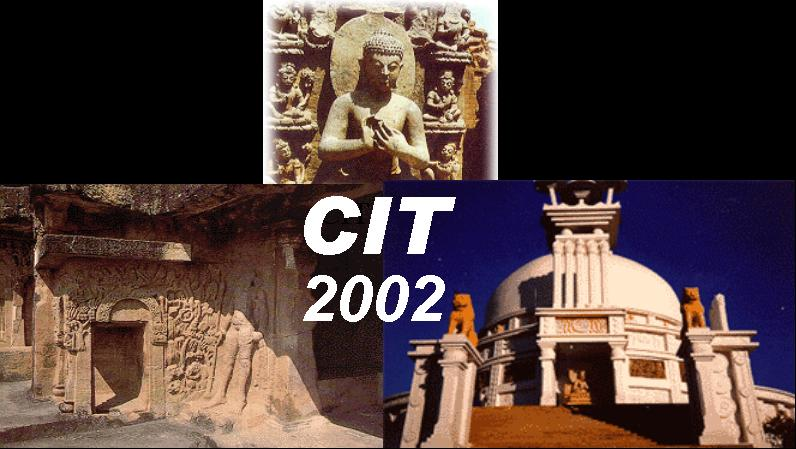

FINAL CALL FOR PARTICIPATION
5th International Conference
on
Information Technology
http://www.swen.uwaterloo.ca/~knaik/CIT02/indexcit02.html
December 21-24, 2002
Bhubaneswar, INDIA

Organized by
Orissa Information Technology Society, Bhubaneswar
http://www.oits.org
Main Sponsors
Avaya Labs, USA & Satyam Computer Services Ltd., India
Co-Sponsors
ITER - Bhubaneswar, NIST - Berhampur, Silicon School – Bhubaneswar,
Krupazal – Bhubaneswar, IISIT - Bhubaneswar, KIIT – Bhubaneswar,
School of Math. Stat. & Comp. Sc. (Utkal University) – Bhubaneswar
INTRODUCTION
The International Conference on Information Technology (CIT) provides a high quality forum for scientists and engineers to present their latest research findings in this rapidly changing field of information technology. CIT has grown over the year and has emerged as one of the major international conference in India. CIT 2002 continues the tradition as a premier forum for presentation of the latest research and development in the area of information technology and its application. The conference will have various technical sessions devoted to tutorials, contributed papers, and invited talks.
Topics of interest includes
Fault Tolerant Computing Soft Computing
Hardware Design System Mobile Networks
Parallel and Distributed Computing Web Applications
Software Engineering
|
Keynote Speakers |
Date |
Time |
|
|
Amiya Pujari |
Dec. 22 |
10:00 AM |
|
|
Ashok Jhunjhunwala |
Dec. 23 |
9:00 AM |
|
|
Deepak Phatak |
Dec. 24 |
3:15 PM |
A MESSAGE FROM GENERAL CHAIR
It is a great pleasure and privilege for me to welcome you all to the Conference on Information Technology (CIT 2002) being held once again in beautiful Bhubaneswar, India, the city of six hundred temples (
http://www.odissi.com/orissa/places/bbsr.htm). CIT is fast becoming a premier conference in India on Information Technology (IT) drawing participants from academia as well as industry, in India and outside of India. The quality of the papers presented at the conference has also improved over the years.IT industry is now a major component of the Indian economy. Its impact on the worldwide IT industry is undisputed. Because of the service-oriented nature of the IT industry (software innovation, development, operations and maintenance), it is dependent largely on human talents especially in science and engineering. India possesses plenty of those people skills. So, it is critical that India continues to maintain and enhance that lead in science and engineering talent by having (i) world-class educational institutions in science and engineering, (ii) a world-class communication infrastructure that enables collaboration amongst individuals and networked-computing on the global Internet and (iii) a professional and social fabric that encourages and rewards people with those skills.
CIT is aimed at that third goal, i.e., early dissemination and discussion of leading edge concepts to further the knowledge in IT. The source for much of that IT knowledge is in the academic discipline of Computer Science (CS). I am thrilled to note that this year’s conference includes 8 tutorials, 3 keynote talks, and 5 invited lectures covering a broad range of CS and IT topics (Graph Theory in CS to Privacy in the age of IT). The core of the conference has 25 full papers, 19 short papers and 13 posters, out of a total of 101 submissions, covering advances in fault-tolerant computing, mobile networks, distributed processing, web applications and software engineering – all these topics are central to the CS academic departments as well as to the IT industry all over the world. I expect that future CIT conferences will continue to maintain this tradition, keep improving the quality and encourage top-notch talent through best young scientist and student awards.
On behalf of the executive committee, I would like to convey sincere thanks to Mr. A. Laxman Rao of Wipro Technologies, Prof. Ashok Jhunjhunwala of IIT, Madras, and Prof. Deepak Phatak of IIT, Bombay, for delivering keynote addresses at the conference and Prof. Ajit Singh of University of Waterloo, Mr. Ashok Panda of Supreme Court of India, Prof. U.C. Mohanty of IIT, Delhi, Prof. K. Thulasiraman of University of Oklahoma, and Prof. Abhay Karandikar for presenting invited lectures at the conference.
We are all indebted to Prof. Sagar Naik of University of Waterloo and Prof. Sridhar Iyer of IIT Bombay, for putting together a fine technical program and the entire executive committee for their tireless, volunteer efforts to make the conference a success. Profs. Durga Misra of NJIT, USA, Prof. Chita Das of Penn State Univ., USA, and Prof. Siba Misra of OITS have been persistent and persuasive in maintaining a quality CIT conference.
Finally, I would like to thank Avaya Labs§ and Satyam Computer Services Ltd. for generous donations, OITS, Bhubaneswar, for sponsorship and organization and ITER, Silicon School, Krupazal, IISIT, KIIT (all in Bhubaneswar) and NIST in Berhampur for their support through various means.
Chandra M. R. Kintala
Avaya Labs, Basking Ridge, NJ, USA
December 2002
COMMITTEE CHAIRS
General Chair
Chandra M. R. Kintala,
Avaya Labs, USA, cmk@avaya.comProgram Chairs
Sridhar Iyer, IIT, Bombay, sri@it.iitb.ac.in
Sagar Naik, University of Waterloo
knaik@swen.uwaterloo.caTutorial Chairs
A. K. Bisoi,
Utkal University, India; bisoi@sify.comGoutam Chakraborty,
Iwate Prefectural University, Japan, goutam@soft.iwate-pu.ac.jpSudeshna Sarkar,
IIT, Kharagpur sudeshna@cse.iitkgp.ernet.inOrganising Chair
S. Padhy, Utal University,
mtechcs@satyam.net.inFinance Chair
Debasish Jena, Centre for IT Education,
debasishjena@hotmail.comPublicity Chairs
A. K. Panda, NIST, Berhampur,
akpanda62@hotmail.comNiranjan Tripathy, Fujitsu, USA,
niranjan@nms.inc.fujitsu.comAdvisory Chair
S. P. Misra President, OITS,
spmisra1@sanchharnet.in
PROGRAM COMMITTEE
Ajit Singh
, University of Waterloo, CanadaAnjali Agarwal, Concordia University, Canada
Anup Kumar, Louisville University, USA
Anirudha Joshi, IIT Bombay, India
Ashwini Nanda, IBM, USA
Basabi Chakraborty, Iwate Prefectural University, Japan
Bhaskar Ramamurthi, IIT Madras, India
P. C. P. Bhatt, IIIT Bangalore, India
B. S. Panda, IIT Delhi, India
Chitta Baral, Arizona State University, USA
David Wei, Fordham University, USA
Sajal Das, University of Texas, USA
Dheeraj Sanghi, IIT Kanpur, India
Goutam Barua, IIT Guwahati, India
K. Gopinath, IISc Bangalore, India
Gautam Das, Microsoft Research, USA
Jagdish Chandra Patra, Nanyang Tech. University, Singapore
Sitaram Iyengar, Louisiana State University, USA
P. K. Kalra, IIT Kanpur, India
Abhay Karandikar, IIT Bombay, India
Ferhat Khendek, Concordia University, Canada
Luiz Fernando Capretz, University of Western Ontario, Canada
Leena Chandran-Wadia, IIT Bombay, India
Manoranjan Satpathy, University of Readings, UK
Sanjay Madria, University of Missouri-Rolla, USA
Miriam Capretz, University of Western Ontario, Canada
Onn Shenoy, IBM, Israel
Ozgur Ulusoy, Bilkent University, Turkey
Dhabaleswar Panda, Ohio State University, USA
Piyu Tripathy, Airvana, USA
Priyadarshan Patra, Intel, USA
Purnendu Sinha, Concordia University, Canada
Qianping Gu, Simon Fraser University, Canada
S. Ramesh, IIT Bombay, India
Ravishankar Iyer, Intel, USA
Ratan Ghosh, IIT Kanpur, India
Ganapati Panda, REC Rourkela, India
Sambit Sahu, IBM Research, USA
S. Chaudhury, IIT Delhi, India
Abdul Sattar, Griffith University, Australia
G. Sivakumar, IIT Bombay, India
Srikanta Pattnaik, UCE Burla, India
S. Sadagopan, IIIT Bangalore, India
U. B. Desai, IIT Bombay, India
Sudarshan Padhy, Utkal University, India
Vladik Kreinovich, University of Texas, USA
Zixue Cheng, University of Aizu, Japan
TUTORIALS AT A GLANCE (ON DECEMBER 21)
|
Tutorial |
Speakers |
Venue |
Time |
|
Multimedia Information Systems |
S. R. Subramanya USA |
Utkal University |
2:00-5:30 PM |
|
Formal Verification: Theory and Practice of Proving Computer Systems |
S. Ramesh and S. Chakraborty IIT Bombay |
Utkal University |
9:00 AM-12:30 |
|
Security Issues in Computer Networks |
IIT Kharagpur |
ITER |
9:00 AM-12:30 |
|
Agent Technology |
H. Ghosh Tata Infotech, Delhi |
IISIT |
2:00-5:30 PM |
|
Multi-Objective Evolutionary Algorithms for Rule Generation in Data Mining
|
A. Ghosh and S. Dehuri ISI Cal, BIITMS bbsr |
Silicon School |
9:00-12:30 AM |
|
Intelligent Sensors and Virtual Instrumentation |
NIST, Berhampur |
ITER |
2:00-5:30 PM |
|
Soft Computing |
S. Bandyopadhyay and U. Maulik ISI Calcutta |
Krupazal |
2:00-5:30 PM |
|
Finite-State Modeling in Software Design |
S. Kundu USA |
KIIT |
2:00-5:30 PM |
OUTLINE OF TUTORIALS
TUTORIAL 1: Multimedia information system
S. R. Subramanya
University of Missouri-Rolla
Abstract: This tutorial presents a broad overview of the major components of Multimedia Information Systems as well as in-depth view of several key principles and techniques used in the various components. We will discuss the following topics: nature of multimedia data (audio, images, and video); A/D conversion, quantization, processing; quantization; compression; JPEG standard; MPEG standard; storage structures of CD-ROMs, DVDs and RAIDs; file system support for continuous media; data placement and disk scheduling algorithms; object-oriented models; temporal models; spatial models; content-based queries, query processing, multidimensional index structures, similarity metrics and similarity searching; network support for multimedia; server-client interaction; quality of service; variable/adaptive bit rates; synchronization.
S. R. Subramanya received the doctoral degree in Computer Science from George Washington University, Washington, D.C. He is currently an Assistant Professor at the University of Missouri--Rolla. He has been teaching courses and conducting research in Multimedia Systems, Data Compression, and Computer Security.
TUTORIAL 2:
Formal Verification: Theory and Practice of Proving Computer SystemsS. Ramesh and S. Chakraborty
IIT Bombay
Abstract: This tutorial consists of the following sections: introduction and motivation; classification of formal verification techniques; specification formalisms; modeling formalisms; binary decision diagrams and variants; verification techniques: (a) theorem Proving and (b) model checking; additional topics:(a) verification of sequential programs and (b) verification concurrent software, and (c) symbolic simulation; overview of some formal verification tools; overview of semi-formal verification; limitations of formal verification and the road ahead.
S. Ramesh has a B.E. from I. I. Sc. Bangalore, Ph.D. from IIT Bombay, and is currently a Professor in the Department of Computer Science & Engineering at IIT Bombay. He has held visiting positions at various universities abroad. His research interests are in programming languages, distributed computing, embedded and real time systems, verification and validation, and software engineering.
S. Chakraborty did his B. Tech. from IIT Kharagpur where he was awarded the President's Gold Medal. He did his M.S. and Ph.D. from Stanford University and is currently a faculty member with the Computer Science & Engineering Department of IIT Bombay. His research interests are in formal techniques for analysis, verification, and validation of digital systems.
TUTORIAL 3:
Security issues in computer networksI. Sengupta
IIT Kharagpur
Abstract: Security issues in computer networks is an important areas of research with the fantastic proliferation of Internet, and the emergence of sensitive applications like e-commerce. Hiding sensitive transactions from intruders as well as providing a reliable means for authenticating oneself are the most important areas of research. The tutorial will provide an overview of the security technologies that have been proposed, with particular focus on those which have been implemented in practice. Topics like conventional cryptography, public key cryptosystems and message digest would be covered, and so also will be emerging techniques like elliptic curve cryptography. Finally, the way security problems are currently dealt with in the Internet scenario would be discussed.
I. Sengupta has obtained his B. Tech., M. Tech, and Ph.D. from University of Calcutta. He is currently an Associate Professor in the Department of Computer Science & Engineering, IIT Kharagpur. His research interests include computer networks and security, VLSI design, fault tolerance and testability.
TUTORIAL 4:
Agent TechnologyHiranmoy Ghosh
Tata Infotech Research Centre, Delhi
Abstract: This tutorial consists of the following sections: what is agent based programming paradigm; characteristics of an software agent; agent taxonomy – architecture; multi-agent systems as a society of autonomous agents; agent communication; mobile agents and security issues; agent execution environment - basic capabilities and review; semantic web and software agents; agent collaboration; distributed problem solving - role of planning; learning in an agent society; benefits of an agent based system; example applications.
Hiranmay Ghosh is heading the Tata Infotech Research Group, Delhi center. His current research interests are Information Retrieval, Multimedia Systems and Agent Based Applications.
TUTORIAL 5:
Multi-objective evolutionary algorithm for rule generation and data miningAshish Ghosh and Satchidananda Dehuri
ISI Calcutta and BIITMS, Bhubaneswar
Abstract : This tutorial will discuss the use of multi-objective evolutionary algorithms in one of the data mining tasks called rule mining. The goal of data mining is to discover patterns from large volumes of data. After post processing through these patterns the desired knowledge/rule are discovered. These rules should satisfy the properties: predictive accuracy, comprehensibility and interestingness.
Ashish Ghosh received the B.E. degree in Electronics and Telecommunication from Jadavpur University, and the M.Tech. and Ph.D. degrees in Computer Science from ISI Calcutta. He is an Associate Professor with the Machine Intelligence Unit of Indian Statistical Institute, Calcutta. He is a recipient of the INSA young scientist award and is an Associate of the Indian Academy of Sciences. His research interests are in Soft Computing, Data Mining, Image Processing, Evolutionary Computation, Neural Networks, and Fuzzy Sets.
Satchidananda Dehuri is a lecturer in Computer Science at Biju Pattnaik Institute of Information Technology & Management Studies(BIITMS), Bhubaneswar, Orissa.
TUTORIAL 6: Intelligent sensor and virtual instrumentation
A. Patnaik and B. S. Pattanaik
NIST, Berhampur
Abstract: The recent trend is to incorporate intelligence in the sensor, so that it can correct itself in the case of non-ideal behavior arising out of various factors. This can be done by use of Artificial Neural Network (ANN). Here in this tutorial we shall discuss how ANN can be utilized to make a sensor intelligent enough to correct itself.
A. Patnaik, after his Ph.D., is presently working as an Asst. Professor in the Department of Electronics and Communications Engineering in National Institute of Science and Technology, Berhampur, Orissa.
B. S. Pattanaik did his B.E. from NIST, Berhampur, and is currently a lecturer at NIST, Berhampur.
TUTORIAL 7:
Soft ComputingSanghamitra Bandyopadhyay and Ujjwal Maulik
ISI Calcutta and Kalyani Govt. Engineering College
Abstract: Soft computing is a consortium of methodologies, working synergistically rather than competitively, which aims to exploit the tolerance for imprecision, uncertainty, approximate reasoning and partial truth in order to achieve tractability, robustness and close resemblance to the human reasoning processes. The primary aim of all the components of soft computing is to attain acceptable solutions at low cost, rather than aiming for the exact solution by expending a huge amount of computational effort. The problems solved using soft computing tools may also be imprecisely formulated. The major components of soft computing are fuzzy sets, neural networks and evolutionary algorithms. In this tutorial we will first describe the basic principles of soft computing. Subsequently, its three major components will be explained in some detail. A practical application of soft computing for solving a real-life problem will then be described. Finally, mention of new and emerging tools like rough sets and case based reasoning will be made.
S. Bandyopadhyay did her Bachelors in Physics and Computer Science from Calcutta University. She did her Masters in Computer Science from IIT Kharagpur and Ph.D in Computer
Science from Indian Statistical Institute, Calcutta. She is currently an Assistant Professor at
Indian Statistical Institute, Calcutta. She is a recipient of the Young Scientist Awards of the Indian National Science Academy (INSA) and the the Indian Science Congress Association (ISCA) in 2000. Her research interests include Pattern Recognition, Data Mining, Soft & Evolutionary Computation, Image Processing and Parallel & Distributed Systems.
Ujjwal Maulik did his Masters and Ph.D in Computer Science in 1991 and 1997 respectively from Jadavpur University, India. He is currently a faculty in the Department of Computer Science and Technology, Kalyani Government Engineering College, Kalyani University, where he has also served as the Head of the Computer Science and Technology Department during 1996-1999. His research interests include Parallel and Distributed System, Artificial Intelligence and Combinatorial Optimization, Soft Computing,
Pattern Recognition and Image Processing.
TUTORIAL 8:
Finite-state modeling in softwareSukhamoy Kundu
Louisiana State University
Abstract: The finite-state model is the simplest and most widely used high-level model for a software. It also forms the basis of more advanced models such as Petri-nets. The finite-state models are applicable for both small and large software systems, including real-time systems. We discuss general techniques for building finite-state models from the software requirements and techniques for simplifying a finite-state model. We also describe methods for extracting the model from an existing software system, which can then serve as a high-level software documentation. We show how certain model-simplification can help to uncover design flaws and improve the software design. We illustrate each step with detailed examples. We close the discussion with an example of several finite-state models working together. This is the typical case for case for a model of large, complex systems.
Sukhamoy Kundu received his PhD from University of California, Berkeley. He is currently an Associate Professor in the Computer Science Department of Louisiana State University, USA.
His research interests are in software engineering, machine learning and data mining, artificial intelligence, fuzzy sets and fuzzy logic and graph algorithms.
INVITED TALKS AT A GLANCE
|
Topic |
Speaker |
Date |
Time |
|
Multiprotocol Label Switching (MPLS) for Traffic Engineering in IP network |
A. Karandikar |
Dec. 22 |
13:30–14:20 |
|
Numerical Simulation of Track and Intensity of Orissa Super Cyclone-1999 |
U. C. Mohanty |
Dec. 23 |
10:00-10:50 |
|
Right to Privacy in the Age of Information Technology |
A. K. Panda |
Dec. 23 |
13:30-14:20 |
|
QoS Based Routing in Communication Networks |
K. Thulasiraman |
Dec. 24 |
8:30-9:20 |
|
Pattern Driven Generation of Web-based Information Systems |
A. Singh |
Dec. 24 |
9:30-10:20 |
OUTLINE OF INVITED TALKS
INVITED TALK 1:
Multiprotocol Label Switching (MPLS) for Traffic Engineering in IP networkAbhay Karandikar
IIT Bombay
Dr. Avaya Karandikar obtained his PhD from IIT Kanpur in 1994. He has worked in Space Applications Centre, ISRO during 1988-89 and Centre for Development of Advanced Computing, Pune during 1994-97. Since 1997, he is working in IIT Bombay where currently he is an Associate Professor. He has consulted extensively for industries in the area of quality of service guarantees in Internet. His research interests include next generation networks.
Abstract: In today's Internet, a service provider has to meet not only the Quality of Service (QoS) guarantees but at the same time has to engineer the network suitably for optimal performance. These QoS and traffic engineering requirements are difficult to achieve in the traditional IP networks. Multi Protocol Label Switching (MPLS) addresses these service requirements for the next generation Internet. In this talk, we will give an overview of MPLS technology. We will also explain the motivation for MPLS and its applicability in traffic engineering for IP networks. In the second part of the talk, we will also discuss about Multi-threaded implementation of MPLS signaling protocol being developed at IIT Bombay. A network planner may want to determine the performance of a traffic engineering approach in a real MPLS network. This provides us the motivation to design and develop a Linux based MPLS Emulator that can be used as a network planning tool as well. In our emulator, multiple MPLS switching nodes are emulated by re-entering the switching engine implemented in Linux kernel of the host machine. Another unique feature of our design is the emulation of packet forwarding behavior by a software device called `MPLS Device'. The emulator leverages upon our MPLS Forwarding Engine and a multi-threaded implementation of control protocol. We will explain the features of our emulator design.
INVITED TALK 2:
Numerical Simulation of Track and Intensity of Orissa Super Cyclone-1999U. C. Mohanty
IIT, Delhi
Dr. Mohanty is Professor in the Centre for Atmospheric Sciences at the Indian Institute of Technology, Delhi, India where he has been since 1979. He received his M.Sc. in physics from Utkal University, Bhubaneswar, India in 1971 and Ph.D. in Tropical Meteorology from USSR Supreme Attestation Commission (Moscow) in 1978. He served as Head of the Centre for Atmospheric Sciences, IIT Delhi during 1998-2001. Dr. Mohanty’s research interests have been in Numerical Weather Prediction, Tropical Meteorology, Monsoon Dynamics, Meso-scale and Climate Modeling. His Ph.D. thesis was on tropical cyclones in the Bay of Bengal and objective methods for prediction of their tracks. He has published more than 100 research papers in reviewed international and national journals and more than 100 paper presentations in international and national conferences / symposia/workshops. He was on deputation to the National Centre for Medium Range Weather Forecasting (NCMRWF), Department of Science & Technology, Govt. of India during 1993-95 as Head and Jt. Advisor of Research Division and was responsible to operationalise medium range weather forecasting system for first time in India with use of CRAY Super Computer. Dr. Mohanty has also extensively visited to UK, USA, France, Italy on different assignments. Dr. Mohanty has received several awards and honours: prestigious Shanti Swarup Bhatnagar Prize (1993), 12th Mausam Award (1989), Samanta Chandra Sekhar Award (1999), AR&DB Silver Jubilee Award (1996), Prof. M.G. Deshpande Award (1984), elected Fellow of Indian Academy of Sciences (1993), Fellow, National Academy of Sciences – India (1997) and Fellow, Indian Meteorological Society (1999).
Abstract: Tropical cyclones in the Bay of Bengal are considered to be the most devastating natural hazard in India. In recent years with advancement of computing resources, satellite and radar observations and quantum jump in communication set ups, numerical weather prediction models are widely used for prediction of tropical cyclones both in operational and research modes. In this presentation a high resolution non-hydrostatic atmospheric model is ued to predict track and intensity of Orissa super cyclone of 1999. The non-linear dynamical system and complex physical processes of the model are solved numerically and integrated up to 5 days in advance using a super computer system. The model simulation results are compared with best-fit track, rainfall and wind observation/estimates obtained from India Meteorological Department. The model is found to perform reasonably well in simulating the track and intensity of the Orissa super cyclone – 1999.
INVITED TALK 3:
Right to Privacy in the Age of Information TechnologyAshok Panda
Senior Lawyer, Supreme Court of India, New Delhi
Ashok Panda is a practicing Senior Advocate in the Supreme Court of India in the fields of: Constitutional law, and laws relating to Information Technology, Communications, Corporate sector, Arbitration, and Foreign Exchange Regulations. Currently, he is visiting the University of Louisville in U.S.A. on the invitation of the Department of Political Science and the Liberal Arts Program. He is delivering public lectures and speaking to students on themes concerning laws relating to the Constitution and the Information Technology. Mr. Panda graduated in law from Delhi University in 1976. He has represented the State of Orissa in the Supreme Court (1986 to 1995). He has been appointed amicus curiae to assist the Supreme Court in Public Interest Litigations raising issues of accountability and transparency in Public Administration. He is representing Ministries of Finance, Defence, Communications and Information and Broadcasting of the Government of India and Corporations, such as, Bharat Sanchar Nigam Limited (BSNL) and the Prasar Bharati in the Supreme Court and the Delhi High Court.
Abstract: Right to Privacy has developed into a constitutional right in view of judicial creativism by Supreme Court in the USA. Gradually, in India as well as through-out the democratic world, privacy is recognized as basic human right. Securing privacy in the Internet and telecommunications is imperative for the development of e-commerce. Ironically, technological innovations have led to computer programs posing serious threats to confidentiality in communications among the users of the Internet. The legal framework granting data protection privacy are still not adequate to generate confidence among the users of the Internet. Even the traditional route of encryption is not an appropriate response in this regard. Therefore, time has come to give an in-depth look into developing further technological innovations along with corresponding legal regimes to safeguard the integrity of the e-commerce related communications.
INVITED TALK 4:
QoS Based Routing in Communication NetworksK. Thulasiraman
University of Oklahoma
Dr. Krishnaiyan Thulasiraman holds the Hitachi Chair and is Professor in the School of Computer Science at the University of Oklahoma, Norman, U.S.A where he has been since 1994. He received his Ph.D. in electrical engineering from the Indian Institute of Technology, Madras, India in 1968. Prior to joining the University of Oklahoma, Dr. Thulasiraman was professor (1981-1994) and chair (1993-1994) of the ECE Department in Concordia University, Montreal Canada. He was on the faculty in the EE and CS departments of the IIT, Madras during 1965-1981 and served as professor in CS from 1977. Dr. Thulasiraman’s research interests have been in graph theory, combinatorial optimization, and algorithms emphasizing applications in a variety of areas in CS and EE. He has published extensively in archival journals, and coauthored with M.N.S.Swamy two text books Graphs, Networks, and Algorithms (1981) and Graphs: Theory and Algorithms (1992), both published by Wiley Inter-Science. Dr. Thulasiraman has received several awards and honors: Elected Member of the European Academy of Sciences (2002), IEEE Circuits and Systems Society Golden Jubilee Medal (1999), Fellow of the IEEE (1990), Senior Research Fellow of the Japan Society for Promotion of Science (1988), and Guest Professor of the German National Science Foundation (1990). Dr.Thulasiraman has also held visiting positions at the Tokyo Institute of Technology, University of Karlsruhe, Germany, University of Illinois at Urbana-Champaign and Chuo University, Tokyo. Dr. Thulasiraman has been professionally very active. He has held several administrative (including Vice-President) and technical positions with the IEEE Circuits and Systems and other professional organizations. Recently he founded the Technical Committee on "Graph Theory and Computing " of the IEEE Circuits and Systems Society.
Abstract: Graph theory and combinatorial optimization techniques play an important role in the design, analysis and control of telecommunication networks. These techniques include algorithms for finding shortest paths, determining a maximum flow, finding a minimum cost tree etc. Though most problems encountered in telecommunication network studies are computationally intractable, the above graph theoretic algorithms have served as building blocks in designing efficient heuristics for these computationally hard problems. Finding a minimum cost delay-constrained routing is one such problem. In this paper we begin with a broad overview of the current state of the art in this area. We then give a detailed exposition of two recent heuristics and provide a comparative evaluation of these heuristics with respect to the performance of certain other approaches.
INVITED TALK 5:
Pattern Driven Generation of Web-based Information SystemsAjit Singh
University of Waterloo
Dr. Ajit Singh completed his B.Sc. degree in Electronics and Communication Engineering (1979) at BIT Sindri, India, and M.Sc. (1986) and Ph.D. (1991) degrees in Computing Science at University of Alberta, Canada. From 1980 to 1983, he worked at the R & D department of Operations Research Group, the representative company for Sperry Univac Computers in India. From 1990 to 1992, he was involved with the design of telecommunication systems at Bell-Northern Research, Ottawa. He is currently an associate professor at the Department of Electrical and Computer Engineering, University of Waterloo. Dr. Singh is interested in the areas of software engineering, network computing, and database systems.
Abstract: The cost of developing and maintaining a web-based information system (WIS) is generally very high due to constantly changing underlying technologies and frequent modifications to original requirements. The lack of clear requirements specifications during the initial development stages also complicates the problem. Furthermore, a WIS can become extremely complex and sophisticated as it evolves. This paper proposes a novel development paradigm, called WISDOM that intends to reduce the development cost by automatic source code generation. The implementation model for WISDOM involves dealing with rapid generation of the first prototype as well as future versions of a web-based information system. The approach is based on generating the source code for the information system based on the database schema and code templates. This approach of software reuse allows partial decoupling of business logic related code from schema information thus reducing maintenance costs inflicted by schema updates. The WISDOM system has been implemented using Enterprise Java Beans (EJB) technology. The paper provides a case study and its results to illustrate the impact of this methodology on the development cost for Web-based information systems.
MAIN PROGRAM (VENUE: THE MARRION)
DECEMBER 22, 2002
08:00 - 9:30 REGISTRATION
9:30 - 10:00 TBA
10:00 - 10:10 Welcome of participants
10.10 – 11.00 INAUGURAL KEYNOTE SPEECH
A. Lakshman Rao
President --Telecom & Internetworking Solutions, Wipro Technologies, Bangalore
10:00 - 11:40 Tea Break
11:40 – 12:30 SESSION IA- FAULT TOLERANT COMPUTING
SESSION IB- SOFT COMPUTING
12:30 - 13:30 Lunch
13:30 - 14:20 INVITED TALK 1
Multiprotocol Label Switching (MPLS) for Traffic Engineering in IP network
Abhay Karandikar, IIT Bombay
14.20 – 14.40 Tea Break
14:40 - 16:20 SESSION IIA – HARDWARE DESIGN
SESSION IIB – MOBILE NETWORKS
DECEMBER 23, 2002
9:00 – 9:50 KEYNOTE SPEECH
Ashok Jhunjhunwala, IIT Madras
10:00 - 10:50 INVITED TALK 2
Numerical Simulation of Track and Intensity of Orissa Super Cyclone-1999
U. C. Mohanty, IIT, Delhi
11:00 - 11:15 Tea Break
11:15 – 12:30 SESSION III A – PARALLEL AND DISTRIBUTED
PROCESSING
SESSION III B – WEB APPLICATIONS
12:30 - 13:30 Lunch
13:30 – 14:20 INVITED TALK 3
Right to Privacy in the Age of Information Technology
Ashok Panda, Supreme Court of India, New Delhi
14:30 – 14:45 Tea Break
14:45 – 16:25 SESSION IV A – SOFT COMPUTING
SESSION IV B – NETWORKS
DECEMBER 24, 2002
9:00 – 9:50 INVITED TALK 4
QoS Based Routing in Communication Networks
K. Thulasiraman, University of Oklahoma
9:50 – 10:40 INVITED TALK 5
Pattern Driven Generation of Web-based Information Systems
Ajit Singh, University of Waterloo
10:40 – 10:50 Tea Break
10:50 – 12:30 SESSION VA PARALLEL AND DISTRIBUTED COMPUTING
SESSION VB - WEB APPLICATIONS
12:30 – 13:30 Lunch
13:30 - 15:35 SESSION VIA – SOFTWARE ENGINEERING
SESSION VIB – SOFT COMPUTING
15:35 - 15:45 Tea Break
15:45 - 16:35 CLOSING KEYNOTE ADDRESS
Deepak Phatak, IIT Bombay
16:35 - 17:30 PANEL DISCUSSION
17:30 - 17:40 CLOSING REMARKS
POSTERS
About Bhubaneswar
:, The venue of the Conference (http://www.orissaindia.com): Bhubaneswar, capital of the state of Orissa, is located in the eastern part of India between Bengal and Andhra Pradesh. The areas around Bhubaneswar have several major attractions. The magnificent Sun Temple of Konarka (known as Black Pagoda) is internationally renowned. Puri and Konark -- both within 30 miles of Bhubaneswar - have beautiful beaches. Close to Bhubaneswar is Nandankanan Zoological Park that includes the largest lion and tiger safari in India. The Udayagiri and Khandagiri hills at the outskirt of the city have a network of man-made caves dating from the fourth century B.C. Presently, Bhubaneswar offers a great promise to IT industries enthused by several liberalisation policies of the government. Some nationally renowned IT industries have started operating from the city. It is the fastest growing city in the eastern region of India.
Orissa Information Technology Society (OITS): (
http://www.oits.org): OITS is a Society of Computer lovers promoting computer education and usage in Orissa. It is mainly a body of educationists and researchers who wish to help in fast growth of computers, having also a strong component of Computer Scientists outside the state and the country. It organised the International Conferences on Information Technology in December 1998 and December 1999. The Proceedings of the last four years have been published by Tata Mc.Graw Hill. This year also they are prublishing the same. The publication is sponsored mainly by Avaya Labs, USA and by Satyam Computer Services, India.
REGISTRATION PARTICULARS FOR CIT2002
REGISTRATION FEES:
(a) Participants from Educational Inst inside India: Rs.1600/-
(b) Participants from Industry inside India: Rs.3000/-
(c) Participants from outside India: US$160/-
(d) Special categories: (i) OITS members, (ii) tutorial speakers, (iii) keynote/invited speakers, (iv) authors of FULL papers. Participants in these categories, who do not have instititutional/project support may pay half the amount otherwise due to them.
(e) Limited financial support for registration may be available for students depending on funds. For this purpose the they may apply to Prof S Padhy, mtechcs@satyam.net.in with full particulars.
(f) Payments may be made to `cit2002' as bankdraft/crossed cheque.
(g) Along with registration particulars, it may be despatched in the address:
Prof Sudarshan Padhy, Organising Chair, Department of Mathematics, Utkal University,
Vani Vihar, Bhubaneswar 751004, INDIA
The registration fees entitles the registrant to copy of the Proceedings, kitbag, lunches, coffee breaks, and, participation in all Technical Sessions.
PARTICULARS FOR REGISTRATION:
(a) NAME
(b) AFFILIATION
(c) Category to which you belong (E.g. (a) and (d) (ii) if you belong to more than one category).
(d) Particulars of Bank Draft/ crossed cheque, such as amount, date, bank, number, payable to `cit2002'.
(e) Particulars of despatch, like, when the letter is mailed and how.
(f) Date,time and mode of their arrival and departure as available
(g) Signature and Date.
FOR ADVANCE REGISTRATION:
Besides the hard copy, please send an email regarding the above to the Organising Chair (to whom the hard copy is being sent) mtechcs@satyam.net.in, with copies to Finance Chair debasishjena@hotmail.com, and to spmisra1@sancharnet.in
Participants paying in US dollars or outstation checks may preferably do advance registration since it takes some time for these checks to get encashed.
CONFERENCE VENUE & HOTEL ACCOMMODATION
Date: 21.12.2002; tutorials are held at different local institutions as announced
Dates: 22 - 24, December, 2002: Academic programs of Conference
Venue for Academic programs: The Marrion. Here registration will also be done
Official hotel: The Marrion with contact person for hotel as Kannan, Vice-President (Planning & Operations) of the hotel. email address of hotel is: marrion@sancharnet.in
Phone: 91-674-2502328, 2502689, 2522472/73/74
Fax: 91-674-2503287, Mobile: 9861022474
Postal Address: 6 Janpath, Bhubaneswar 751001, INDIA.
Special rates for the Conference participants in the hotel are Rs.1000/- upwards. For an extra person in the same room, the charges may be about Rs.100/- more. Room charges include bed tea and breakfast. The hotel is about 2 km from railway station, and about 10 km from airport.
The participants shall directly contact Mr. Kannan / The Marrion, and make arrangements for payments for accommodation. In exceptional cases they may however seek our assistance/write/email to us and/or, e-mail us copies of correspondence with the hotel. The tutorial speakers or others for whom cit will make payment may write to the Organising Chair to make arrangements for their stay. The organizing chair shall also contact them regarding the same.
Contact Persons:
Prof Sudarshan Padhy, Organising Chair,
Department of Mathematics, Utkal University,
Vani Vihar, Bhubaneswar 751004, INDIA.
Tel: +91-674-2582084
Prof S P Misra
Tel:+91-674-2440910, 94370 00810.